맑음
첫 모금에서 느껴지는 깨끗한 질감
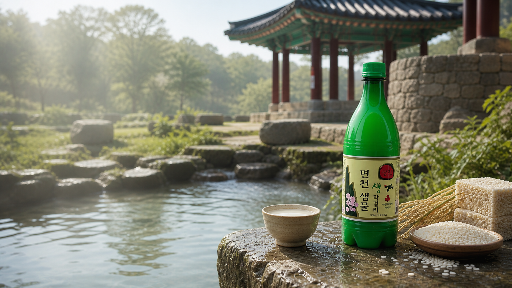
당진 면천의 생막걸리
수백 년 동안 마을을 적셔온 당진 면천의 물. 그 맑은 샘물과 쌀, 누룩의 시간을 담아 오늘 마시기 가장 신선한 전통 막걸리를 빚습니다.
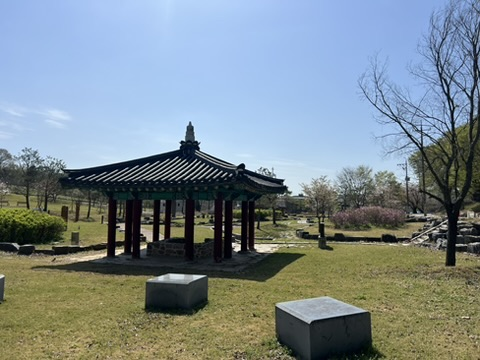
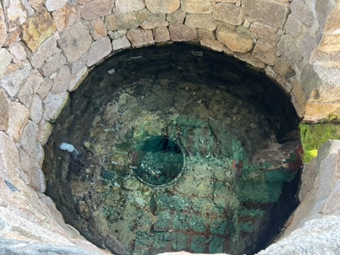
당진 면천에는 오래전부터 마을의 삶을 이어온 샘이 있습니다. 그 물은 밥을 짓고, 길손의 목을 축이고, 계절마다 다른 온도로 땅의 숨을 전했습니다.
면천샘물 생막걸리는 그 샘에서 시작합니다. 좋은 물을 바탕으로 쌀과 누룩을 천천히 발효시켜, 부드럽고 산뜻한 생막걸리의 맛을 완성합니다.
면천샘
막걸리는 화려한 향보다 먼저 물의 결을 드러내는 술입니다. 면천의 샘물은 오랜 시간 땅속을 지나며 맑고 부드러운 맛을 품었습니다.
면천샘물 생막걸리는 이 물의 깨끗한 인상을 해치지 않기 위해 과한 단맛보다 자연스러운 산미와 쌀의 고소함을 살립니다.
첫 모금에서 느껴지는 깨끗한 질감
목 넘김을 편안하게 만드는 물의 결
당진 면천이라는 땅에서 온 고유한 이야기
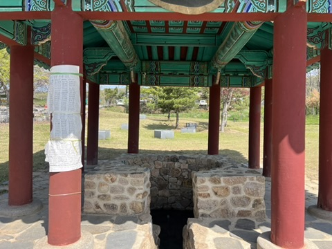
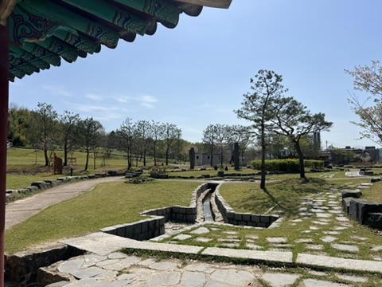
생막걸리
신선한 생발효감과 쌀의 은은한 단맛이 살아 있는 당진 전통 막걸리입니다. 차갑게 마셨을 때 가장 산뜻하며, 전이나 나물, 해산물, 수육처럼 담백한 음식과 잘 어울립니다.
제품 표시사항
면천샘물 생막걸리는 냉장 보관이 필요한 생탁주입니다. 신선한 발효감을 위해 제조일과 보관 상태를 확인하고, 받으신 뒤에는 차갑게 보관해 주세요.
19세 미만에게 판매할 수 없습니다.
양조장 전경
태극기가 걸린 입구와 소나무, 낮은 지붕의 생산장이 먼저 눈에 들어옵니다. 면천샘물 생막걸리는 이 마당을 지나 발효실과 제성실로 이어지는 실제 양조장의 하루 속에서 만들어집니다.
양조 과정
양조장 안쪽에는 발효 탱크와 제성기, 세척과 보관 공간이 차례로 이어집니다. 면천의 샘에서 출발한 이야기는 이곳에서 쌀과 누룩, 온도와 시간의 관리로 구체적인 술이 됩니다.
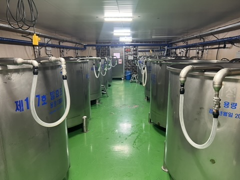
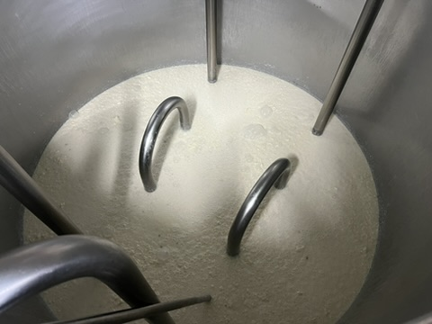
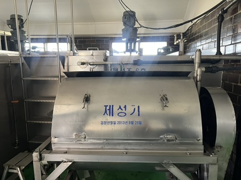
막걸리의 바탕이 되는 쌀을 깨끗하게 씻고 찝니다.
발효의 향과 깊이를 만드는 누룩을 더해 술의 성격을 잡습니다.
술의 질감을 결정하는 물로 발효의 균형을 맞춥니다.
시간이 쌀의 단맛과 산미를 열어줄 때까지 기다립니다.
생막걸리 특유의 살아 있는 탄산감과 발효감을 담아냅니다.
맛의 인상
흔들어 마시면 더 부드럽고, 가만히 따라 마시면 더 맑습니다. 기분에 따라 두 가지 질감으로 즐길 수 있는 생막걸리입니다.
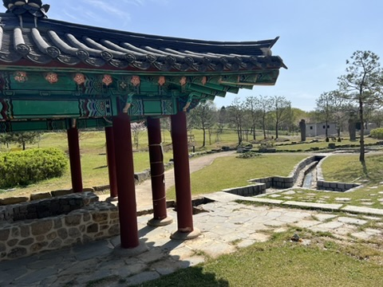
지역 이야기
면천은 오래된 길과 물, 마을의 시간이 남아 있는 곳입니다. 면천샘물 생막걸리는 단지 한 병의 술이 아니라, 당진의 땅과 사람이 함께 만든 로컬의 맛입니다.
지역의 물, 지역의 기억, 오늘의 양조 기술이 만나 전통을 지금의 언어로 이어갑니다.
방문과 체험
정자 아래의 우물, 면천주조의 생산실, 발효 탱크와 보관 공간까지. 사진 속 장소를 따라가면 한 병의 막걸리가 지역의 풍경에서 어떻게 만들어지는지 자연스럽게 보입니다.
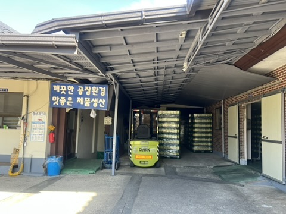
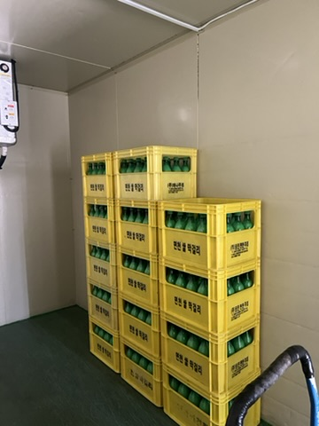
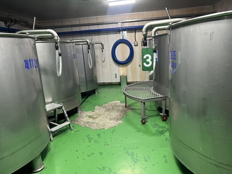